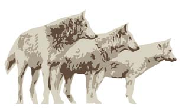

Los Lobos gets ready to HOWL!
April 28
IT'S HERE! Boxes begin to be stacked high as they await
the technical team.
May 1
The technical team from IBM starts assembling LosLobos.
The table below served as an efficient assembly line. The floor was
transformed into a forest of racks. LosLobos's 14 racks will hold 256
nodes.
May 4
The nodes are assembled. They were stacked while awaiting
installation. Space is a premium at the AHPCC.
May 5
The IBM technical team rips open the Myrinet shipment.
They immediately begin preparing for installation.
May 8
The nodes begin to be inserted into the racks. The process
takes approximately 5 minutes per node. That does not include the cabling.
May 9
The process of inserting the nodes into their racks
is completed. The technical team has assigned install and cabling duties
amongst themselves. The cabling process begins. The nodes are powered
on for the first time.
May
10 and Beyond
The cabling process continues. It is going smoothly,
but takes diligence.
{info} |